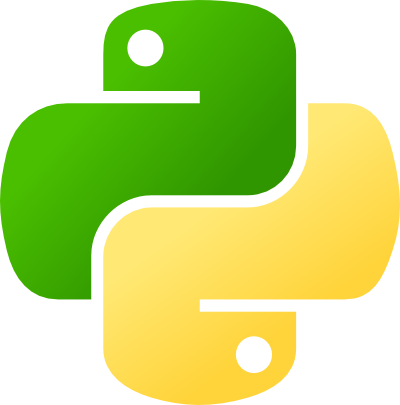

PyCon Australia 2013 – July 5–7, Hobart, Tasmania
Mailing List • Twitter • Attendees Directory
Connecting the Australian Python Community
PyCon Australia is the national conference for users of the Python Programming Language. In July 2013, we're returning to Hobart, bringing together students, enthusiasts, and professionals with a love of Python from around Australia, and from all over the World.
Once again, we'll have a weekend packed full of amazing content on all aspects of the Python ecosystem, presented by experts and core developers of the tools and frameworks you use every day.
We're excited about the return of Friday Night CodeWars, and of course, we've got the usual conference dinner, as well as two days of developer sprints following the conference proceedings.
We can't wait to share more about the conference in the coming months. Until then, subscribe to our announcement list, follow us on twitter, or add yourself to our Lanyrd page.
Now with three days of talks!
In 2013, before the main event kicks off, we're welcoming two new mini-conferences on the Friday 5 July.
DjangoCon AU is Australia's first national gathering for developers using the Django Web Framework. Presented by the Django Software Foundation, this mini-conference will feature a day of Django-specific talks and tutorials to support the growing community of Australian Django Developers.
The Python on OpenStack day is a day of in-depth talks and tutorials covering the OpenStack cloud platform – one of the most important growing Open Source Python projects – for Python developers.
Help shape our programme
Every year, we strive to bring the best of Python from around Australia to the one place, but we can always use some help to find the Python topics that you want to see at PyCon Australia.
If there's a topic that you really want to see at PyCon Australia, or there's a speaker who you think we really need to have on our programme, then head over to our topic or speaker suggestion form, and let us know all about it!
Dates & Venue
We'll be opening our Call for Proposals in late February, and we'll be closing it in early April.
Early Bird registration will open towards the end of March, and will run through April. Registration will remain open until close to the conference opening.
The conference will be held in July, where we're moving into a bigger, better venue at the Wrest Point Convention Centre in Hobart. The Miniconfs will be held on Friday 5 July, the conference proceedings are on Saturday 6 & Sunday 7 July, and the post-conference sprints will be on Monday 8 & Tuesday 9 July.
To keep track of our announcements, sign up to our (low-traffic) announcements mailing list.